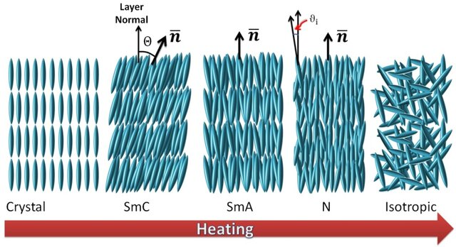
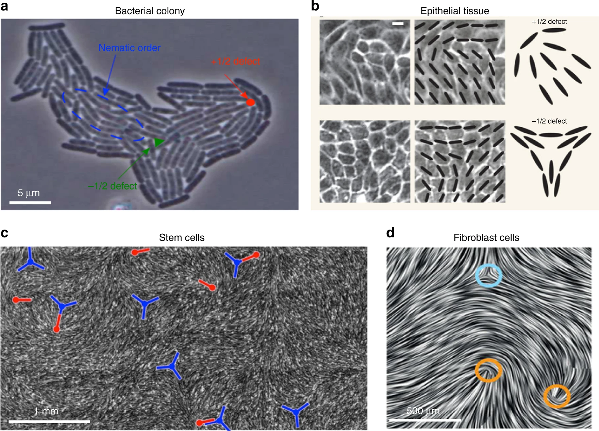
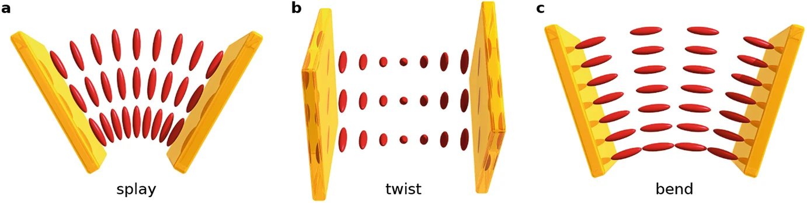
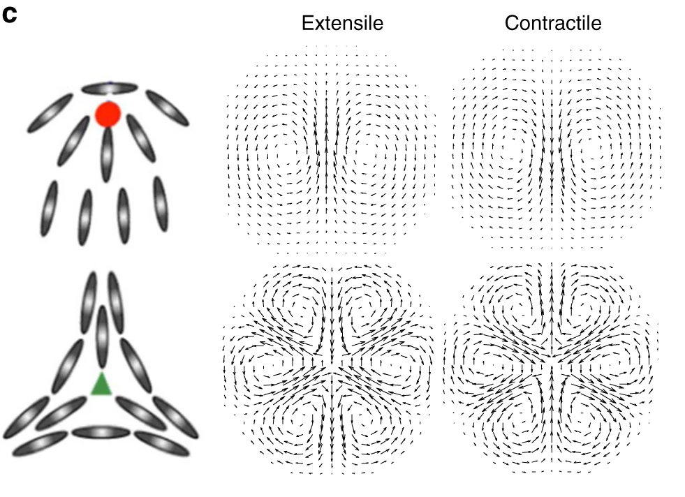
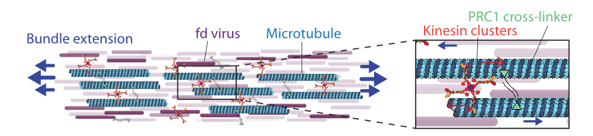

Toner-Tu Model and Active Nematics
Toner-Tu Model for Flocking
The Toner-Tu model describes the collective motion of self-propelled particles that exhibit polar order, such as birds in flocks, fish in schools, or migrating cells. Unlike nematic systems (which we will discuss below), where particles have head-tail symmetry, flocking systems display clear polar order – particles have distinct front and back ends and move preferentially in the direction they are pointing. Developed by John Toner and Yuhai Tu in 1995, this continuum theory provides a hydrodynamic framework for understanding collective motion in active systems far from equilibrium.
The model extends the microscopic Vicsek model (introduced in Lecture 7), where particles move at constant speed and align their direction with nearby neighbors while experiencing random noise. What distinguishes the Toner-Tu approach is its focus on emergent, macroscopic behavior through coarse-grained hydrodynamic equations, analogous to how fluid dynamics describes collective molecular motion without tracking individual molecules.
The Toner-Tu model tracks two essential hydrodynamic fields:
- The density field \(\rho(\mathbf{r},t)\) - representing the number of particles per unit area/volume at position \(\mathbf{r}\) and time \(t\)
- The velocity field \(\mathbf{v}(\mathbf{r},t)\) - describing the average direction and speed of particles at position \(\mathbf{r}\) and time \(t\)
The complete hydrodynamic equations are:
\[\frac{\partial \rho}{\partial t} + \nabla \cdot (\rho \mathbf{v}) = 0\]
This first equation is the continuity equation expressing particle number conservation – particles can neither be created nor destroyed, only redistributed. \[ \begin{aligned} \frac{\partial \mathbf{v}}{\partial t} + \lambda_1 (\mathbf{v} \cdot \nabla)\mathbf{v} + \lambda_2 (\nabla \cdot \mathbf{v})\mathbf{v} + \lambda_3 \nabla(|\mathbf{v}|^2) &= \\ &\alpha \mathbf{v} - \beta |\mathbf{v}|^2 \mathbf{v} - \nabla P \\ &+ D_L \nabla(\nabla \cdot \mathbf{v}) + D_T \nabla^2 \mathbf{v} + \mathbf{f} \end{aligned} \]
The simplified version of this equation, which still captures the essential physics, is:
\[\frac{\partial \mathbf{v}}{\partial t} + \lambda_1 (\mathbf{v} \cdot \nabla)\mathbf{v} = \alpha \mathbf{v} - \beta |\mathbf{v}|^2 \mathbf{v} - \nabla P + D \nabla^2 \mathbf{v} + \mathbf{f}\]
Each term in this equation has a specific physical meaning:
\(\alpha \mathbf{v} - \beta |\mathbf{v}|^2 \mathbf{v}\): This is the self-propulsion term that drives the system to a preferred speed \(v_0 = \sqrt{\alpha/\beta}\) when \(\alpha > 0\). It acts like a “cruise control” because the two terms balance each other to stabilize the speed: when \(|\mathbf{v}| < v_0\), the linear term \(\alpha \mathbf{v}\) dominates and accelerates the particle; when \(|\mathbf{v}| > v_0\), the cubic damping term \(-\beta |\mathbf{v}|^2 \mathbf{v}\) dominates and slows it down. The only stable fixed point of \(\dot{\mathbf{v}} = \alpha\mathbf{v} - \beta|\mathbf{v}|^2\mathbf{v}\) (in the absence of other terms) is \(|\mathbf{v}| = v_0\), so any deviation in speed is automatically corrected, preventing particles from stopping or accelerating indefinitely. Note that this term only fixes the magnitude of the velocity, not its direction – the direction is set by the interplay of alignment, pressure, and noise.
\(\lambda_1 (\mathbf{v} \cdot \nabla)\mathbf{v}\): This nonlinear advection term describes how velocity propagates itself spatially – similar to how turning behavior spreads through a bird flock. Unlike in fluid dynamics where \(\lambda_1 = 1\), in flocking systems this coefficient can differ from unity due to the absence of Galilean invariance.
\(\nabla P\): This pressure gradient term pushes particles from high-density to low-density regions, preventing overcrowding. In the full model the pressure is expanded about the mean density, \(P(\rho) = P_0 + \sigma_1(\rho - \rho_0) + \ldots\), so that to leading order \(\nabla P \approx \sigma_1 \nabla\rho\) and the term provides a restoring force against density inhomogeneities. This density coupling is what gives rise to the propagating density waves discussed below.
\(D \nabla^2 \mathbf{v}\): This diffusion term smooths out sharp velocity gradients, representing how neighboring particles align with each other. In the complete model, diffusion can be anisotropic with different coefficients for longitudinal (\(D_L\)) and transverse (\(D_T\)) components.
\(\mathbf{f}\): This represents random noise – unpredictable movements due to individual decisions, environmental factors, or other stochastic influences. The noise has specific statistical properties crucial for the model’s behavior.
What makes flocking systems remarkable is their ability to maintain long-range orientational order in two dimensions, even in the presence of noise. This contradicts the Mermin-Wagner theorem, which states that continuous symmetries cannot be spontaneously broken in equilibrium systems with short-range interactions in dimensions d ≤ 2. Flocks evade this limitation because they are inherently nonequilibrium systems that continuously consume energy to maintain their ordered state.
The Toner-Tu model predicts several distinctive signatures that experimentalists can look for:
Giant number fluctuations: In equilibrium systems, the standard deviation of particle number scales as \(\sqrt{N}\) with the average number \(N\). In flocks, these fluctuations scale as \(N^\alpha\) where \(\alpha > 1/2\), leading to much larger density variations than expected in equilibrium systems. The same anomalous fluctuations arise in motility-induced phase separation (Lecture 6).
Self-organized flows: The system spontaneously develops coherent flow patterns such as traveling bands, vortices, or asters that persist over long time scales.
Anomalous sound propagation: Coupled density and velocity disturbances propagate as two sound modes whose speeds \(c_\pm(\theta)\) depend on the angle \(\theta\) between the propagation direction and the direction of mean motion. Unlike the single isotropic sound speed of a simple fluid, these modes are strongly anisotropic, a direct consequence of the broken rotational symmetry of the moving flock. The dispersion relation for these modes and the role of behavioral inertia are developed in Lecture 7.
Robust long-range order: The system maintains its coherent motion across length scales that grow with system size, even in two dimensions where thermal equilibrium systems would become disordered.
These predicted behaviors have been confirmed in diverse experimental systems – from bacterial colonies like \(E.\ coli\) swarming on agar surfaces to epithelial cell sheets migrating during wound healing, and even in synthetic active matter systems like vibrated granular rods or light-activated colloidal particles. The remarkable success of this relatively simple hydrodynamic model in describing such varied systems demonstrates the universality of the physics governing collective motion in active systems.
Toner-Tu is a continuum (hydrodynamic) theory of polar active matter – particles with a definite front and back – written in terms of a density field \(\rho(\mathbf{r},t)\) and a velocity field \(\mathbf{v}(\mathbf{r},t)\). Its defining result is that such systems sustain true long-range orientational order in two dimensions, evading the Mermin-Wagner theorem because they are driven out of equilibrium.
Each of the predicted signatures above has a concrete experimental counterpart, and their recurrence across very different systems is a striking demonstration of universality in active matter:
- Long-range polar order and the flocking transition: colloidal Quincke rollers, where millions of self-propelled colloids organize into a macroscopic polar liquid (Bricard et al., Nature 2013), and naturally bird flocks, fish schools, and migrating epithelial sheets.
- Self-organized flows and traveling density bands: actin motility assays, where myosin-driven filaments form propagating polar waves (Schaller et al., Nature 2010).
- Giant number fluctuations: vibrated granular polar disks (Deseigne et al., 2010) and swarming bacteria such as B. subtilis (Zhang et al., 2010); the same anomaly appears in motility-induced phase separation (Lecture 6).
- Anomalous, anisotropic sound modes: the dispersion relation \(c_\pm(\theta)\) and the role of behavioral inertia are developed in Lecture 7.
Interactive Simulation of the Toner-Tu Model
Below is an interactive simulation that demonstrates the key features of the Toner-Tu model described above. Rather than solving the continuum equations directly, it is an agent-based simulation in which each particle is updated with the Toner-Tu terms applied at the particle level (self-propulsion, alignment to the local mean direction acting as the diffusion/elastic term, a pressure response to density gradients, and noise). This is the microscopic dynamics whose coarse-grained behavior the Toner-Tu equations describe, and it lets you explore how different parameters affect the emergent collective motion and long-range order.
This interactive simulation demonstrates several key aspects of the Toner-Tu model:
Emergent Order: Even with simple local alignment rules, the particles spontaneously organize into coherent moving flocks. The order parameter φ quantifies this collective alignment - values close to 1 indicate strong alignment, while values close to 0 indicate disorder.
Parameter Sensitivity: You can adjust the alignment strength to see how strongly particles align with neighbors (corresponding to the diffusion term in the equations), and the noise level to represent individual randomness in movement decisions (the noise term f).
Phase Transitions: At low noise and high alignment strength, particles form a coherent flock with global order. As noise increases or alignment decreases, the system transitions to a disordered state. The phase indicator shows when the system crosses these transitions.
Density Waves: Under certain parameter regimes, you may observe waves of high density propagating through the system. These are similar to the density fluctuations predicted by the Toner-Tu model, arising from the coupling between density and velocity fields.
Self-Propulsion: The simulation explicitly implements the self-propulsion term (α·v - β|v|²·v) that drives particles to move at a preferred speed, which is crucial for the formation of flocks.
The key insight from the Toner-Tu model is that polar active matter can exhibit true long-range order in two dimensions, which would be impossible in equilibrium systems according to the Mermin-Wagner theorem. This property enables bird flocks, fish schools, and other collective biological systems to maintain coherence over large distances.
Active Liquid Crystals and Nematic Order
Liquid Crystals
Liquid crystals represent a state of matter that combines properties of both liquids and crystalline solids. Unlike ordinary liquids where molecules move and orient randomly, or crystals where molecules are locked in rigid lattices, liquid crystals flow like liquids while maintaining some degree of molecular orientation order.
Picture a box of rod-like molecules. At low density the rods point in all directions with equal probability: this is the isotropic phase, an ordinary liquid with no preferred direction. As the density is raised past a threshold, the rods spontaneously line up along a common axis (the director), even though nothing in their interaction energetically prefers one direction over another. This is the nematic phase, and the onset of orientational order as density crosses a critical value is the isotropic-to-nematic transition.
The striking point is that this ordering is driven by entropy, not by attractive forces – a genuine case of “order from disorder.” Two kinds of entropy compete:
- Orientational entropy favours the isotropic phase, because rods pointing every which way have far more orientational states than aligned ones.
- Translational (free-volume) entropy favours alignment, because two crossed rods block a large region of space to each other’s centres, whereas two nearly parallel rods block much less. Aligned rods therefore leave more room for every rod to move, which means more translational states.
At low density the rods rarely get in each other’s way, so orientational entropy dominates and the phase stays isotropic. At high density the rods are constantly in each other’s way, and the translational freedom gained by aligning outweighs the orientational entropy lost, so the nematic phase takes over. The control parameter is essentially the density times the rod’s excluded volume, which is why long, thin rods order at very low volume fraction.
Onsager’s theory makes this competition quantitative through the free energy per particle, written as a functional of the orientational distribution \(f(\Omega)\), the probability of a rod pointing along the angles \(\Omega\):
\[F = F_\text{ideal} + F_\text{excluded} = k_B T \int f(\Omega) \ln[f(\Omega)] d\Omega + \frac{1}{2} \rho \int\int f(\Omega_1) f(\Omega_2) V_\text{excl}(\Omega_1, \Omega_2) d\Omega_1 d\Omega_2\]
The first term \(F_\text{ideal}\) is the orientational entropy: it is smallest for a uniform (isotropic) \(f(\Omega)\) and so penalizes alignment. The second term \(F_\text{excluded}\) is the free-volume cost, which alignment reduces, because for two rods of length \(L\) and diameter \(D\),
\[V_\text{excl} \approx 2L^2 D |\sin\gamma|,\]
where \(\gamma\) is the angle between them: crossed rods (\(\gamma = 90°\)) exclude the most volume, parallel rods (\(\gamma = 0\)) the least. Raising the density \(\rho\) increases the weight of this second term, so above a critical density the free energy is minimized by a peaked (nematic) \(f(\Omega)\) rather than the uniform (isotropic) one. That switch is the phase transition.
This is equilibrium ordering, set purely by thermodynamics. The active nematics in the rest of this lecture begin from such an ordered state and then drive it permanently out of equilibrium by continuously injecting energy.

The simplest and most common type of liquid crystal is the nematic phase, named from the Greek word “νήμα” (nema) meaning “thread.” In nematics, rod-like molecules align roughly parallel to each other, but their centers of mass are distributed randomly like in a liquid. This gives the material a preferred direction, known as the director, while still allowing it to flow.
This makes liquid crystals useful in everyday applications like LCD displays, where electric fields can be used to control the orientation of the liquid crystal molecules, affecting how light passes through them.
From Passive to Active Nematics: Adding Energy to the Mix
Active nematics take the concept of liquid crystals one step further by incorporating internal energy consumption. While regular (passive) liquid crystals only change their configuration in response to external forces, active nematics continuously convert stored or ambient energy into motion.
Think about the difference between a crowd of people standing still (passive system) versus a crowd where everyone is walking (active system). Both might show alignment – people facing the same direction – but the active system has a constant energy input that drives motion.
In laboratory settings, active nematics can be created using:
- Biological components: Mixtures of microtubules (protein filaments from cell structures) and kinesin motor proteins that consume ATP for movement
- Bacterial suspensions: Rod-shaped bacteria like E. coli that swim using flagella
- Synthetic systems: Specially designed particles that convert chemical energy or light into motion
Rod-Like Particles with No Front or Back
A key distinction between the Vicsek model (Lecture 7) and nematic systems lies in the symmetry of the particles:
In the Vicsek model, particles have a distinct front and back (like birds or fish), giving them a clear direction of movement. This is called polar symmetry.
In nematic systems, the rod-like particles have head-tail symmetry - they look the same from either end (like a pencil). This means that a particle pointing “up” is equivalent to one pointing “down.”
This fundamental difference in particle symmetry leads to entirely different types of collective behavior and mathematical descriptions.

Describing Alignment: The Director Field and Order Parameter
In nematic systems, we need two key concepts to describe the alignment:
The director field (n): A unit vector that represents the average orientation of particles at each point in space. Because of head-tail symmetry, n and -n represent the same physical state.
The scalar order parameter (S): A measure of how well-aligned the particles are with the director. S ranges from 0 (complete disorder) to 1 (perfect alignment).
For a collection of rod-like particles in two dimensions, the scalar order parameter can be calculated as:
\[S = \langle 2(\mathbf{u}_i \cdot \mathbf{n})^2 - 1 \rangle = \langle \cos 2\theta_i \rangle \qquad (2\text{D})\]
where \(\mathbf{u}_i\) is the orientation of the i-th particle, \(\theta_i\) is its angle relative to the director \(\mathbf{n}\), and the angle brackets represent an average over all particles in a small region. This formula gives S = 1 when all particles align perfectly with n, and S = 0 when orientations are completely random. In three dimensions the corresponding definition is the second Legendre polynomial,
\[S = \left\langle \frac{3\cos^2\theta_i - 1}{2} \right\rangle = \langle P_2(\cos\theta_i)\rangle \qquad (3\text{D})\]
which likewise runs from 0 (isotropic) to 1 (perfect alignment). The factor and offset differ between 2D and 3D because the isotropic average of \(\cos^2\theta\) is \(1/2\) in the plane but \(1/3\) in space.
The Q-Tensor: A Complete Mathematical Description
While the director and scalar order parameter provide an intuitive picture, a more complete mathematical description uses the Q-tensor. This tensor captures both the direction of alignment and its strength in a single mathematical object.
The Q-tensor is defined as:
\[\mathbf{Q} = S \left(\mathbf{n}\mathbf{n} - \frac{1}{d}\mathbf{I}\right)\]
where:
- S is the scalar order parameter (strength of alignment)
- n is the director field (average orientation)
- d is the dimension of space (usually 2 or 3)
- I is the identity tensor
This might look complicated, but it has a simple physical interpretation: the Q-tensor describes how the orientation of particles deviates from being completely random. The subtraction of I/d ensures that the tensor is traceless (the sum of diagonal elements is zero), reflecting the fact that we’re measuring deviations from the isotropic (random) state.
Q Tensor Visualization
Q Tensor Parameters
In the visualization above, the ellipsoid represents the Q tensor with:
- The red line shows the director (n), the average orientation of particles
- The blue ellipsoid shape is determined by the scalar order parameter (S)
- When S = 1 (perfect alignment), the ellipsoid is maximally elongated along the director
- When S = 0 (no alignment), the ellipsoid becomes a sphere, indicating no preferred direction
Understanding Defects in Nematic Fields
Defects in nematic liquid crystals are not merely structural curiosities; they represent regions of stored energy. The free energy density in a nematic liquid crystal can be expressed as:
\[F_T = F_0 + F_d\]
where \(F_0\) is the free energy density of the uniformly aligned state, and \(F_d\) is the contribution due to distortions. The distortion free energy, also known as the Frank free energy density, consists of three main terms for non-chiral nematics:
\[F_d = \frac{1}{2}K_1(\nabla \cdot \mathbf{n})^2 + \frac{1}{2}K_2(\mathbf{n} \cdot \nabla \times \mathbf{n})^2 + \frac{1}{2}K_3(\mathbf{n} \times \nabla \times \mathbf{n})^2\]
representing splay, twist, and bend deformations respectively, with \(K_1\), \(K_2\), and \(K_3\) as the corresponding elastic constants.

In any nematic system, there are points or regions where perfect alignment becomes impossible. These are called topological defects, and they’re unavoidable when the director field must satisfy certain boundary conditions. These can be considered as “frustration points” in the system.
The most common defects in 2D nematics are characterized by their topological charge or winding number, which indicates how the director rotates as one moves around the defect:
- +1/2 defect: The director rotates by 180° (half a turn) as you move around the defect. These have a distinctive comet-like appearance with a single tail.
- -1/2 defect: Similar to +1/2 but with opposite rotation, creating a three-pronged star pattern.
- +1 defect: The director rotates by 360° (full turn), creating a pattern that resembles a source or sink.
The energy of a defect scales with its topological charge in a simple mathematical relationship. Using the Frank free energy formalism introduced above, we can express the elastic energy of a defect with charge m as:
\[E \propto \pi K m^2 \ln(R/a)\]
where K is the relevant elastic constant (or combination of splay, twist, and bend constants), R is the system size, and a is the defect core radius. This formula clearly shows that energy scales with the square of the topological charge. Consequently, a +1 defect (with m=1) has four times the energy of a +1/2 defect (with m=1/2), explaining why +1 defects often spontaneously split into two +1/2 defects in many systems.
These high-energy regions are not just theoretical constructs but have practical applications in defect engineering, where they can attract particles or reagents, enabling the creation of novel self-assembling materials and structures.
Director Field Visualization with Tensor Glyphs
For 2D nematic fields, combine director field visualization with tensor glyphs:
Nematic Field Controls
Visualization Guide:
- Lines represent the director field (n)
- Ellipses represent Q tensor
- Color indicates scalar order parameter (S)
- Notice how defects affect both director orientation and magnitude of order
Continuum Theory of Active Nematics
Based on this understanding of nematic liquid crystals, we now extend these concepts to active systems. As we’ve seen, passive nematics are characterized by rod-like particles with head-tail symmetry that align along a common director. Active nematics maintain this same orientational order but with a crucial difference: each constituent continuously injects energy into the system, driving it far from equilibrium.
The comprehensive review by Doostmohammadi et al. (2018) provides a theoretical framework that connects the fundamental concepts of nematic order we’ve discussed with the rich dynamics that emerge when energy is continuously supplied at the microscale.
From Q-Tensor to Hydrodynamics
Recall that we described nematic order using the Q-tensor, which captures both the director orientation and the degree of alignment. In active systems, this Q-tensor becomes dynamically coupled to fluid flow. The continuum description of active nematics combines the Q-tensor formalism with hydrodynamic equations through several coupled differential equations.
The first equation describes the conservation of mass:
\[\partial_t \rho + \nabla \cdot (\rho \mathbf{u}) = 0\]
where \(\rho\) is the density and \(\mathbf{u}\) is the velocity field. This standard continuity equation ensures that mass is neither created nor destroyed.
The momentum conservation equation governs the flow field:
\[\rho (\partial_t + \mathbf{u} \cdot \nabla) \mathbf{u} = \nabla \cdot \sigma^{total}\]
Here, the left side represents the inertial terms (often negligible in microscopic systems), while the right side incorporates all stresses that drive the flow. The total stress tensor \(\sigma^{total}\) includes several contributions:
\[\sigma^{total} = \sigma^{passive} + \sigma^{active}\]
The passive stress \(\sigma^{passive}\) includes viscous and elastic contributions familiar from passive liquid crystal theory. The elastic stress depends on gradients of the Q-tensor and resists distortions in the director field.
What distinguishes active from passive nematics is the addition of the active stress tensor:
\[\sigma^{active} = -\zeta \mathbf{Q}\]
This remarkably simple term encapsulates the essence of activity in the system. The extensile and contractile cases below are the nematic counterparts of the pusher and puller force dipoles introduced for microswimmers in Lecture 5. The activity parameter \(\zeta\) determines both the strength and type of active stress:
- When \(\zeta > 0\) (extensile systems), the active units push fluid outward along the director axis and draw it in from the sides. These systems are destabilized by bend distortions.
- When \(\zeta < 0\) (contractile systems), the active units pull fluid inward along the director axis and push it out to the sides. These systems are destabilized by splay distortions.

Examples of extensile systems include microtubule bundles pushed apart by kinesin motors, while actomyosin networks in cells often exhibit contractile behavior.

The final key equation describes how the nematic order itself evolves:
\[(\partial_t + \mathbf{u} \cdot \nabla) \mathbf{Q} - \mathbf{S}(\mathbf{W}, \mathbf{Q}) = \Gamma \mathbf{H}\]
This equation includes:
- Advection of the nematic order by the flow (the \(\mathbf{u} \cdot \nabla \mathbf{Q}\) term)
- Flow-induced rotation and stretching of the director, described by the corotational term \(\mathbf{S}(\mathbf{W}, \mathbf{Q})\), which depends on the symmetric and antisymmetric parts \(\mathbf{W}\) of the velocity-gradient tensor (note this is a tensor coupling, not the scalar order parameter \(S\) above)
- Relaxation toward equilibrium (the \(\Gamma \mathbf{H}\) term, where \(\mathbf{H}\) is the molecular field derived from the free energy)
Together, these equations create a feedback loop: the nematic order generates active stresses, which create flows, which in turn affect the nematic order.
Instabilities and the Emergence of Active Turbulence
The most striking feature of active nematics is their inherent instability above a critical activity threshold. This instability stems directly from the interplay between active stress and nematic elasticity.
Consider a small bend distortion in an otherwise uniform nematic. The active stress associated with this distortion generates a flow that, rather than restoring the uniform state, amplifies the initial distortion. This positive feedback mechanism destabilizes the uniform state when activity exceeds a threshold value.
Mathematically, linear stability analysis reveals that the critical activity scales with the specific elastic constant corresponding to the primary distortion mode:
\[\zeta_c \sim K_i/L^2\]
where \(K_i\) is the relevant elastic constant (\(K_1\) for splay in contractile systems, \(K_3\) for bend in extensile systems) and \(L\) is the system size. In practice, the most unstable mode depends on the sign of the activity: extensile systems (ζ > 0) primarily destabilize through bend deformations (governed by \(K_3\)), while contractile systems (ζ < 0) do so through splay deformations (governed by \(K_1\)). Beyond this threshold, the system develops a complex, chaotic flow state termed “active turbulence.”
The characteristic length scale of this turbulent flow is:
\[l_{active} \sim \sqrt{K/|\zeta|}\]
This important relation explains why active turbulence displays structures (vortices and jets) with a characteristic size that decreases with increasing activity. Unlike inertial turbulence where energy cascades across scales, active turbulence has an intrinsic length scale determined by the balance between elastic resistance and active driving.
Topological Defects as Active Particles
Topological defects – points where the nematic order breaks down – take on a new significance in active systems. In passive nematics, defects are static imperfections that gradually annihilate to minimize elastic energy. In active nematics, they become dynamic entities that drive the system’s complex behavior.
Active nematics spontaneously generate pairs of topological defects with charges +1/2 and -1/2. The +1/2 defects, with their comet-like structure, experience an active force along their symmetry axis, causing them to move like self-propelled particles. Their velocity scales with activity:
\[v_{+1/2} \sim \zeta l_d/\eta\]
where \(l_d\) is the defect core size and \(\eta\) is the viscosity. In contrast, -1/2 defects with three-fold symmetry experience no net active force and move primarily due to elastic interactions and background flow.
This continuous creation, motion, and annihilation of defects sustains the active turbulent state. The defect density in steady state scales as:
\[n_{defect} \sim |\zeta|/K\]
showing that stronger activity generates more defects, while stronger elasticity suppresses them.
- Apolar order: Particles have head-tail symmetry (n is equivalent to -n), so the order is described by the tensor Q rather than by a velocity vector as in the Toner-Tu model.
- Active stress: Activity enters through a single term, \(\sigma^{active} = -\zeta \mathbf{Q}\), with \(\zeta > 0\) for extensile and \(\zeta < 0\) for contractile systems.
- Generic instability: The uniformly ordered state is unstable above a critical activity \(\zeta_c \sim K/L^2\) (bend-driven for extensile, splay-driven for contractile), with no analogue in passive nematics.
- Intrinsic length scale: Beyond threshold the flow self-organizes on a scale \(l_{active} \sim \sqrt{K/\zeta}\) that shrinks as activity grows.
- Self-motile defects: Topological defects become dynamical objects; +1/2 defects self-propel like active particles (\(v \sim \zeta l_d/\eta\)) while -1/2 defects experience no net active force.
- Active turbulence: The continuous creation, motion, and annihilation of defects sustains a chaotic flow state even at vanishing Reynolds number.
Defects are not always the relevant degrees of freedom. In a quiescent, well-aligned nematic (passive, or active below the instability threshold) they are rare, static, and simply relax away to minimize elastic energy. They become the controlling physics in a few specific situations:
- Above the active instability: once activity exceeds \(\zeta_c\), the ordered state spontaneously nucleates \(\pm 1/2\) defect pairs. Their continuous creation, motion, and annihilation is the active-turbulent state, and the steady-state defect density (\(n_\text{defect} \sim |\zeta|/K\)) sets its characteristic length scale.
- Transport and mixing: the self-propelled \(+1/2\) defects act as autonomous carriers, stirring the fluid and driving chaotic mixing that no passive nematic can achieve.
- Biological function and morphogenesis: in living nematics defects localize mechanical and biochemical activity. In epithelial monolayers \(+1/2\) defects concentrate stress and trigger cell extrusion and death (Saw et al. 2017); in growing bacterial colonies they shape the colony edge; and in morphogenesis they act as organizing centers for shape change (for example marking the future head and tentacles in regenerating Hydra).
- Confined and patterned systems: boundaries pin and organize defects into regular lattices or oscillatory states, which is the basis for controlling active flows (the confinement discussion above).
A useful rule of thumb: if the system is below threshold and globally ordered, the director field and its elastic distortions are description enough; once activity drives it into turbulence, or it is a living, growing tissue, the defects become the natural language for its dynamics.
Experimental Realizations
The theoretical framework of active nematics has been validated in diverse experimental systems. Each system demonstrates how the Q-tensor formalism and active stress concept can capture complex behaviors across different scales and materials.
Reconstituted systems of microtubules and kinesin motor proteins provide perhaps the cleanest realization of active nematics. In these systems, ATP hydrolysis powers the extension of microtubule bundles, creating active stresses that drive the formation of defects and turbulent-like flows. The experiments by Sanchez et al. (2012) beautifully confirmed the theoretical predictions regarding defect dynamics and active length scales.
Bacterial suspensions of rod-shaped organisms like E. coli or B. subtilis also exhibit nematic ordering at high densities. The flagellar propulsion of these bacteria generates active stresses that drive complex flows. Measurements by Dunkel et al. (2013) revealed velocity fields and energy spectra consistent with active nematic theory.
Perhaps most surprisingly, multicellular systems including epithelial cell monolayers display active nematic behavior. The elongated shape of these cells naturally promotes nematic alignment, while cellular forces generate active stresses. Recent work by Saw et al. (2017) demonstrated that topological defects in these cellular nematics can even influence biological functions, triggering processes like cell extrusion at +1/2 defect locations.
Controlling Active Nematics Through Confinement
Active nematics respond dramatically to geometric confinement, offering opportunities to control their complex dynamics. Unlike equilibrium systems where confinement generally simplifies behavior, active nematics in confinement can develop entirely new dynamical states.
In circular confinements, active nematics can form regular arrays of defects that would be impossible in unconfined systems. The competition between boundary-imposed alignment and bulk active stresses leads to these organized defect lattices.
Channel geometries provide another route to control active nematics. When the channel width approaches the intrinsic active length scale \(l_{active}\), the chaotic active turbulence can transform into coherent, unidirectional flows. This phenomenon suggests potential applications in microfluidic pumping and transport.
Some confined geometries even produce oscillatory states, where the system cycles regularly between different defect configurations. These active nematic oscillators represent a form of mechanical self-organization that converts continuous energy input into regular motion – a principle that may have applications in designing synthetic motors at the microscale.
Active Nematics in Biology
The active nematic framework provides a powerful lens for understanding biological organization across scales. From subcellular structures to developing tissues, many biological systems display features consistent with active nematic physics.
The cytoskeleton itself combines semiflexible filaments (microtubules, actin) with molecular motors in a manner that closely resembles an active nematic. The branched actin networks driving cell motility and the spindle apparatus separating chromosomes during cell division both exhibit active stress generation coupled with orientational order.
At the tissue level, many cell types are naturally elongated and form nematic arrangements when crowded. The active stresses generated by these cells create patterns of deformation and flow that influence tissue development. Recent work has identified nematic ordering and topological defects in developing fruit fly wings, embryonic tissues, and even tumor cell invasions.
This growing evidence suggests that active nematic physics may represent a fundamental organizing principle in biology, contributing to pattern formation and function across scales. The mathematical framework we’ve discussed provides a quantitative language for understanding these complex biological phenomena.
The continuum predictions map cleanly onto a hierarchy of experimental systems, each probing a different facet of the theory:
- Microtubule-kinesin suspensions (Sanchez et al., 2012) are the cleanest extensile active nematic, confirming spontaneous defect generation, the active length scale \(l_{active}\), and turbulent flows.
- Dense bacterial suspensions (Dunkel et al., 2013) reproduce the velocity fields and energy spectra characteristic of active turbulence.
- Epithelial cell monolayers (Saw et al., 2017) show that +1/2 defects are biologically functional, triggering cell extrusion and death at defect cores.
- Confined active nematics (Opathalage et al., 2019) develop ordered defect lattices and oscillatory states when the confinement size approaches \(l_{active}\).
The fact that a single activity parameter \(\zeta\) together with the elastic constant \(K\) captures behavior spanning reconstituted proteins, bacteria, and living tissue is the central reason active nematics has become a unifying framework across soft and living matter.